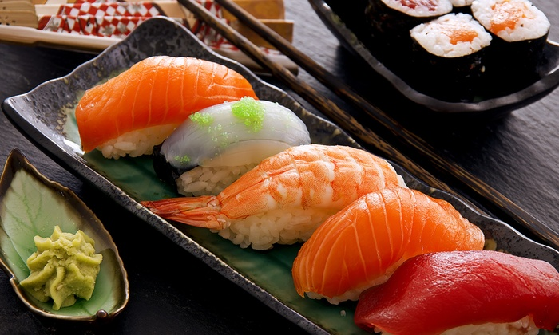
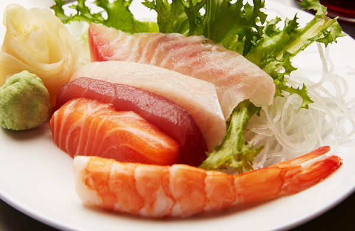
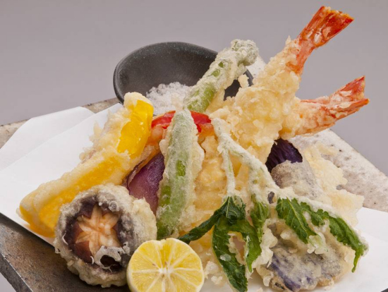
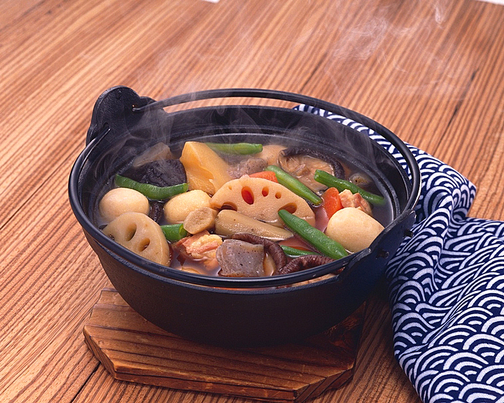

Sushi: Sushi (すし, 寿司, 鮨) is a Japanese dish of specially prepared vinegared rice (鮨飯 sushi-meshi). Traditionally Sushi is made with medium grain white rice. It is often prepared with raw seafood, but some varieties of sushi use cooked ingredients such as calamari, eel, and imitation crab meat. Many others are vegetarian.
Sashimi: Sashimi is often the first course in a formal Japanese meal, but it can also be the main course, presented with rice and miso soup in separate bowls. Japanese chefs consider sashimi the finest dish in Japanese formal dining and recommend that it be eaten before other strong flavors affect the palate. The sliced seafood that composes the main ingredient is typically draped over a garnish. The typical garnish is Asian white radish, daikon, shredded into long thin strands, or single leaves of the shiso (perilla) herb.
Tempura: Tempura (天ぷらor天麩羅 tenpura, [tẽ̞mpɯᵝra]) is a classical Portuguese dish brought to and popularized by Japan,[citation needed] consisting of seafood or vegetables that have been battered and deep fried.
Nimono: Nimono (煮物) is a simmered dish in Japanese cuisine. A nimono generally consists of a base ingredient simmered in shiru stock flavored with sake, soy sauce, and a small amount of sweetening. The nimono is simmered in the shiru over a period of time until the liquid is absorbed into the base ingredient or evaporated. The base ingredients for a nimono is typically a vegetable, fish, seafood, or tofu, either singly, or in combination. The shiru stock for a nimono is generally dashi. Other than sake and soy sauce, the stock can be further flavored by mirin, sugar, salt, vinegar, miso, or other condiments. A heavy covered pot is used in making nimono in order to spread the heat evenly throughout the ingredients during the simmering process.
   {kind=link}
{kind=link}
{kind=link}
{kind=link}